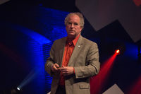

Preservación digital - La web de emijrp
La información siempre está en peligro de desaparecer y la información digital todavía más.
Los soportes no son eternos (la vida media de un CD dista mucho de ser 100 años como decían). Los discos duros duran apenas unos años antes de empezar a tener sectores defectuosos corrompiendo los datos, lo que en muchas ocasiones deja los archivos inservibles.
La tecnología avanza rápidamente dejando muchos formatos inaccesibles por la llegada de otros nuevos, tanto el software (¿os acordáis de los procesadores de textos de MS-DOS como WordStar o WordPerfect?), como el hardware (¿os acordáis de los discos de 5 1/4?).
Y todo esto sin contar que hoy día subimos mucho contenido a Internet a servicios como YouTube, Flickr, o nuestros propios correos de Gmail, sin plantearnos que son servicios que proporciona una empresa y que un día dejarán de existir (quizás no mañana, pero seguro que en unos años). Si no tenemos copias de seguridad de nuestros datos, los perderemos el día que cierren el servicio o nos cierren la cuenta.
| Tabla de contenidos |
|---|
|
1. ¿Qué hacer? 2. Archivistas destacados 3. Proyectos 4. En el cine 5. Referencias 6. Enlaces externos 6.1 Archivos digitales por región |
¿Qué hacer?
Lo primordial es preservar los datos que para uno son muy importantes, es decir, aquellos que has generado tú. Puede tratarse de documentos escritos, fotografías de tus cámaras, vídeos de las vacaciones, etc. No existe nada 100% seguro, pero una manera de mejorar la preservación de tus datos es tener una copia de seguridad. En mi caso, disponer de un disco duro externo (que están bien de precio, unos 60 euros el de 1TB) me permite tener una copia de mis archivos fundamentales. También se pueden usar CDs o DVDs para hacer una recopilación de las fotografías y vídeos más importantes o mejores (ya que estos soportes se han quedado un poco pequeños con el avance de la resolución de las cámaras fotográficas).
Si nos salimos de los archivos producidos por uno mismo, en Internet también hay mucha información que merece la pena ser preservada. Aquí cada uno tendrá sus gustos, en mi caso he participado en la preservación de datos en los siguientes proyectos:
- 15M archive: un archivo que contiene fotografías, vídeos y documentos sobre el movimiento 15M. Fue complementado y quizás superado por 15Mpedia, que fundé tiempo después.
- Archive Team: proyecto compuesto de muchos subproyectos para preservar distintos sitios web de Internet que van cerrando cada año. Los subproyectos en los que más he participado son:
- Jamendo: web con miles de albumes musicales subidos por sus propios autores. Anunció en cierto momento que iba a cerrar, de modo que nos pusimos manos a la obra para descargar todo. Más adelante anunciaron que mantendrían el sitio en funcionamiento.
- WikiTeam: proyecto con el que hemos descargado más de 20.000 wikis que utilizan el motor MediaWiki.
- Wikispaces: en 2018, esta empresa que ofrecía alojamiento wiki a centros educativos, profesores y alumnos, anunció que cerraba y que todos los wikis desaparecerían después de unos meses. Como el motor wiki que utilizaban era distinto a MediaWiki, tuve que desarrollar un script que extrayera todas las páginas, imágenes y metadatos (no servía el de WikiTeam). Conseguí preservar 198.000 wikis de esta forma.[1]
Archivistas destacados
Breves reseñas biográficas de personas que dedicaron parte de su vida a la preservación de información o conocimientos en distintos formatos.
{kind=link}
- Vivian Maier (1926-2009), una trabajadora de servicio doméstico que en sus ratos libres se dedicaba a la fotografía callejera. Llegó a acumular más de 150.000 fotografías.[2]
{kind=link}
- Marion Stokes (1929-2012), productora televisiva, activista por los derechos civiles y bibliotecaria. Durante 35 años, desde 1977 hasta su muerte, grabó cientos de miles de horas de los canales de noticias FOX, MSNBC, CNN, C-SPAN, CNBC y otros, utilizando hasta 8 vídeos domésticos repartidos por su casa. Casada y con hijos, planificaba las salidas de casa de forma que las cintas (de seis horas) no se terminasen antes de que regresasen. Su marido le ayudaba a cambiar las cintas, y cuando ya era demasiado mayor, contrató a un ayudante para esta tarea. En total acumuló más de 70.000 cintas VHS y Betamax. Al fallecer, su hijo donó la colección a Internet Archive siendo necesarios cuatro camiones para el traslado. La digitalización del material están en curso y tomará varios años.[3][4] Al parecer hay un documental sobre su historia The Marion Stokes Project.[5]
{kind=link}
- Henry Spencer (1955), programador de software libre y escritor canadiense. Entre 1981 y 1991, mientras trabajaba en el Departamento de Zoología de la Universidad de Toronto, conservó más 2 millones de mensajes de USENET en cintas magnéticas. Esta enorme colección en 141 cintas, fue incorporada a los archivos de Google en 2001, aumentando la cobertura del histórico de USENET en más de una década hacia atrás en el tiempo.[6] La conversión de cinta a disco fue realizada por David Wiseman y otros, encontrándose disponible para descargar en Internet Archive.[7]
{kind=link}
- Paul Mawhinney, coleccionista de vinilos que llegó a tener más de 3 millones de ejemplares.
{kind=link}
- Jason Scott, creador de la web TEXTFILES.COM que conserva miles de ficheros de texto de la época de las BBS. Fundador de Archive Team. Historiador, archivista y director de documentales sobre historia de Internet y de la informática.
|  |
| Brewster Kahle |
{kind=link}
- Brewster Kahle, creador de Internet Archive.
- Dante Melgarejo, archivó cientos de grabaciones de la emisora Escucha Chile.[8]
Proyectos
https://www.wired.com/story/how-to-design-beacons-for-humanitys-afterlife/
En el cine
El documental alemán La oscura era digital: ¡Socorro, estamos desapareciendo! (Hilfe, wir verschwinden – Das Digitale Desaster) dirigido por Jörg Daniel Hissen y Peter Moers trata acerca de este tema. En él es entrevistado Stewart Brand de la Long Now Foundation.
Otros documentales sobre proyectos de preservación digital son:
- Archive (2012)
- Digital Amnesia (2014)
- Google and the World Brain (2013)
- ¿El fin de la memoria? (2015)
- The House of History (1996)
- The Man Who Wanted to Classify the World (2002)
- Toute la mémoire du monde (1956)
Referencias
- ↑ Wikispaces en Internet Archive
- ↑ Vivian Maier en Wikipedia
- ↑ Marion Stokes en Wikipedia
- ↑ Marion Stokes Collection en Internet Archive
- ↑ The Marion Stokes Project
- ↑ Henry Spencer en Wikipedia
- ↑ Usenet Archive of UTZOO Tapes en Internet Archive
- ↑ Donación de cintas del programa "Escucha Chile" a la BCN
Enlaces externos
Archivos digitales por región
- Archivo de la Web Española
- Archivo del Patrimonio Digital Vasco - Ondarenet
- Patrimonio Digital de Cataluña - PADICAT
 |
Esta página fue modificada por última vez el 2018-11-28 12:33:48 (UTC) | GitHub pages |